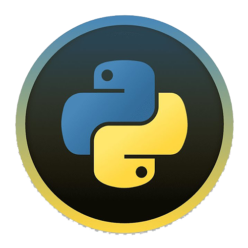

 |
Python — это активно развивающийся скриптовый язык, который используют для решения большого объема самых разноплановых проблем и задач. Python пригодится в создании компьютерных и мобильных приложений, его применяют в работе с большим объемом информации, при разработке web-сайтов и других разнообразных проектов, используют в машинном обучении. Данный язык программирования используют крупные известные корпорации, такие как Spotify и Амазон (например, для анализа данных и создания алгоритма рекомендаций), YouTube, Инстаграм и даже Walt Disney. Таким образом, Python нашел свое место в различных областях — с его помощью можно решить множество задач разной сложности. |
№ |
Description |
Lesson file |
Source code |
1 |
About Python: |
no file |
|
2 |
About GitHub: |